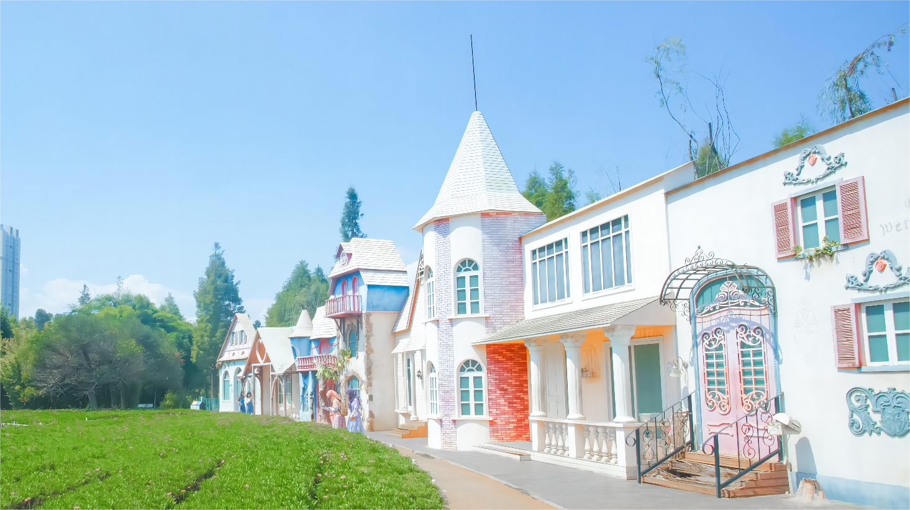
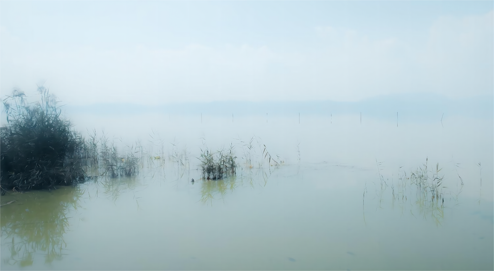
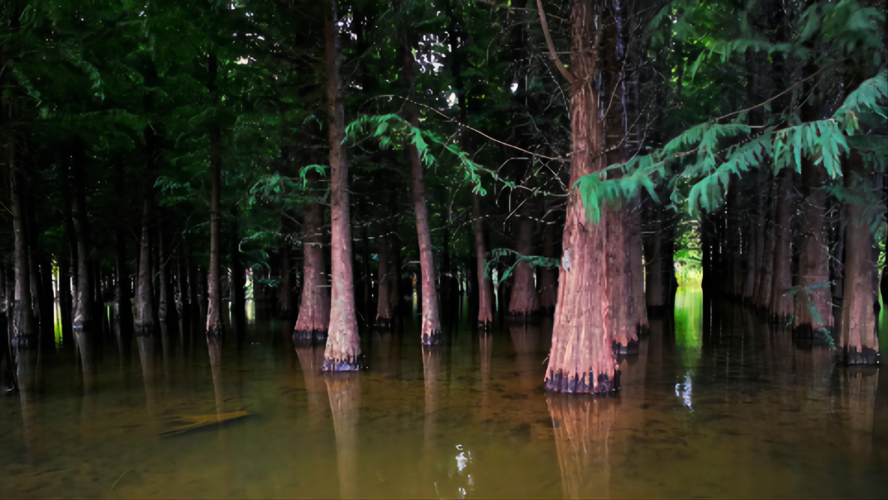
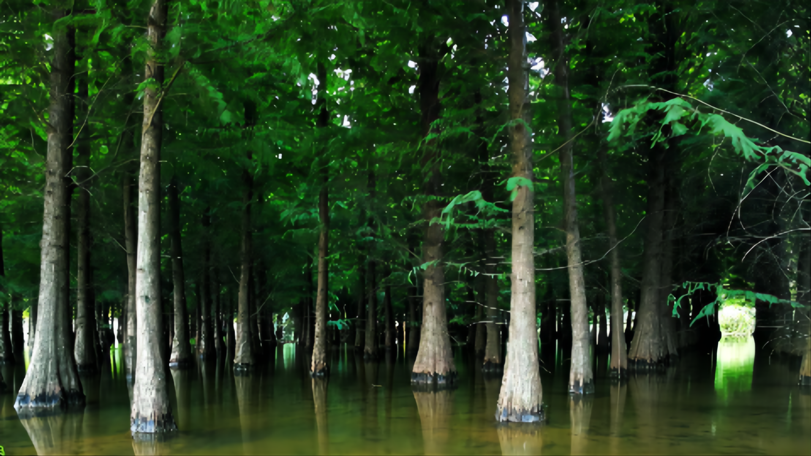

云南大学
捞鱼河湿地公园是昆明滇池东岸一个规模较大的湿地公园，位于捞鱼河汇入滇池的入湖口处，这里既是滇池生态修复的重要工程，又是市民休闲的好去处。
盛夏时节，在昆明捞鱼河湿地公园，最耀眼的是五彩缤纷的百日菊，花开成海的景致令人着迷。
捞鱼河湿地公园是昆明滇池东岸一个规模较大的湿地公园，位于捞鱼河汇入滇池的入湖口处，这里既是滇池生态修复的重要工程，又是市民休闲的好去处。
除了成片成片长在水中的杉树木之外，捞鱼河湿地公园最出名的当数应季而生的花海景致了。郁金香、大丽花、百日菊、剑兰 ......随着季节的变化，这里的花儿变换着品种，都是好看的模样。
夏日盛放的大丽花，花海内多是五颜六色、姹紫嫣红，特别是经过雷雨洗涤过后，大丽花开更胜烟火，捞渔河湿地公园邀您前来观赏花卉、清凉盛夏！
云南大学地球科学学院@2021~2022